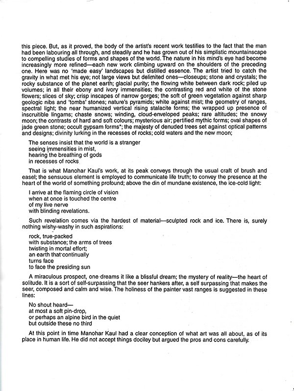
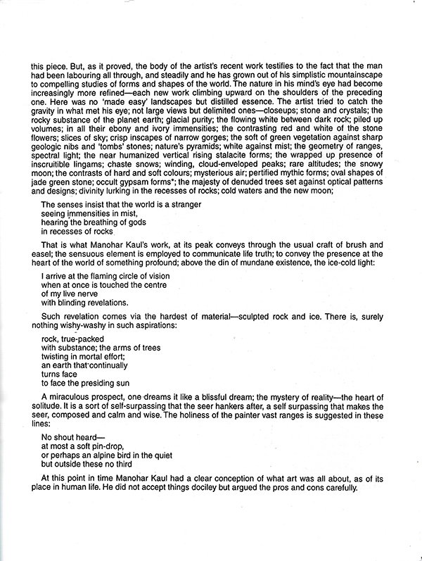

The Healing Aura of Colour
New Delhi, 1998
In this unusual and deeply personal exhibition, Manohar Kaul offers landscapes shaped not only by observation, but by resonance. These watercolours emerge from his long-standing belief in the curative powers of colour—drawn from his study of gem vibrations, planetary rhythms, and the aura of living things. Merging artistic intuition with the subtle energies of nature, Kaul’s paintings become meditative fields where light, pigment, and healing intention come together. Through these works, colour is no longer just seen—it is felt.
Catalogue

 



Press Reviews

THE PIONEER, MARCH 30, 1998
Kashmir in watercolours
By Santo Datta
Gods, appears again and again in Manohar Kaul’s watercolour landscapes. In his more than hundred watercolours, now on view at the AIFACS, the veteran artist re-runs his views of the hills and dales, the lakes and woodlands, the sunsets and morning glow he left behind in Kashmir. A prolific painter, Manohar Kaul has painted literally hundreds of Kashmir landscapes and innumerable watercolours. What is noticeable in his recent show is an almost imperceptible change in his technique in the medium. In some paintings such as the Naturescape VI, he has used the transparent colour in thickly patinated brushstrokes on high-grained paper, tempering the pigment zinc white with deep blue and black, making the highlight of the mountain peaks and the moon and clouds glow with a soft light. The underpainted dark colour shows through the discontinuities of the textured highlight areas. This kind of impressionistic technique he has generally avoided in his earlier oil paintings in which his main concern was smooth tonalities without revealing the brushstrokes. In his watercolours such as the Naturescape VII and II, he has worked with overlapping soft washes, ranging from the thinnest transparency, partially covered with darker shades of other colours. This technique, while discarding the details of objects and summarily treating the forms only in terms of broad washes, has lighted up the scene from behind the semi-silhouetted forms. In other paintings, he has simplified the technique more: Against the glowing red underpainting, he brushes dark blue when the surface is half-wet and lets the fringes of the blue areas smudge into the background. Painted within a brief span of about one year, his recent watercolours are technically much ahead of his earlier paintings, particularly when he uses quick touches of light green against the golden glow without disturbing colour harmony (Naturescape VII).
करंट न्यूज
22 मार्च 1998
Current News
March 22, 1998
कश्मीर की सुन्दरता पर आधारित कला चित्रों की प्रदर्शनी
An Art Exhibition Based on the Beauty of Kashmir
By Yogesh Bhatt
योगेश भट्ट
नई दिल्ली। कश्मीर की सुन्दरता पर आधारित जल रंगों के चित्रों की प्रदर्शनी आईफैक्स कला दीर्घा में आयोजित की गई है।
तीस साल बाद पुनः कला की दुनिया में उतरने के पीछे रहस्यों को उजागर करते हुए श्री कौल कहते हैं कि कला समीक्षक होने के साथ ही साथ अनेकों कला पत्र-पत्रिकाओं से जुड़े होने और राष्ट्रीय तथा अंतर्राष्ट्रीय स्तर की कला दीर्घाओं की व्यवस्था से जुड़े होने के कारण समयाभाव में कला को समय ही नहीं दे पाया।
चित्रों और समीक्षकों की प्रेरणा से ही लगभग 110 से ऊपर कश्मीर की सुन्दरता पर आधारित नेचर्स्केप्स और मिनिएचर पेंटिंग्स, जब-जब समय मिल पाया, विशेषकर इस वर्ष के प्रारंभिक दो महीनों के दौरान, तैयार कर पाया हूँ। दिल्ली के उपराज्यपाल तेजेन्द्र खन्ना द्वारा उक्त चित्र-प्रदर्शनी का उद्घाटन किया गया।
दोनों प्रकार के कलाचित्रों की प्रमुख विशेषता यह है कि प्रकृति के विभिन्न स्वरूपों पर आधारित अलग-अलग किस्म के कई-कई चित्र हैं, जो क्रमशः प्रकृति के बदलते परिवेश को चित्रित करते हैं। उन्होंने बताया कि इन चित्रों में समय-समय पर प्रकृति में आए परिवर्तनों को भी दर्शाया गया है।
साढ़े पाँच हजार रुपये से लेकर दस हजार रुपये तक के कला चित्र इस अवसर पर कलाप्रेमियों के लिए खरीद हेतु प्रदर्शित किए गए हैं, जो दर्शकों की पसंद, अभिरुचि और पॉकेट के अनुसार उपलब्ध हैं।
1925 में श्रीनगर, कश्मीर में जन्मे मनोहर कौल ने एम.ए. कला विषय में श्री ए. एस. टेक्नीकल इंस्टिट्यूट, श्रीनगर से किया। इसके बाद आगे की पढ़ाई के लिए लंदन चले गए, जहाँ उन्होंने गिल्डस विश्वविद्यालय से पेंटिंग्स में प्रथम श्रेणी प्राप्त की। इसके बाद उन्होंने समय-समय पर एकल और समूह प्रदर्शनियों में भाग लिया — जैसे आईफैक्स आर्ट गैलरी, श्रीधराणी, ललित कला अकादमी, जवाहर कला प्रसाद (जयपुर) में। उन्हें जम्मू-कश्मीर कला-संस्कृति अकादमी द्वारा 1965 और 1988 में कलाभूषण पुरस्कार से भी सम्मानित किया जा चुका है।
New Delhi — An exhibition of watercolour paintings based on the scenic beauty of Kashmir is currently being held at the AIFACS Art Gallery.
Revealing the reasons behind returning to the world of art after thirty years, Mr. Kaul explains that while he remained engaged as an art critic, contributor to several art journals, and administrator at both national and international art institutions, he could not devote enough time to painting due to these responsibilities.
Encouraged by fellow artists and critics, he created over 110 naturescapes and miniature paintings inspired by the beauty of Kashmir — painted whenever time permitted, especially during the first two months of this year. The exhibition was inaugurated by Delhi’s Lieutenant Governor, Tejendra Khanna.
The main highlight of both series lies in the diversity of natural forms captured through multiple stylistic approaches. Mr. Kaul mentions that the paintings also reflect the evolving changes in nature and environment over time.
The paintings, priced between ₹5,500 and ₹10,000, are available for sale during the exhibition, catering to a wide range of tastes and budgets.
Born in Srinagar, Kashmir, in 1925, Manohar Kaul earned a Master’s degree in Fine Arts from A.S. Technical Institute, Srinagar. He later went to London for further studies, where he graduated with distinction in Painting from the Guilds University. Over the years, his work has been showcased in solo and group exhibitions at venues including AIFACS, Shridharani Gallery, Lalit Kala Akademi, and Jawahar Kala Kendra, Jaipur. He has also been honoured with the Kalabhushan award by the Jammu & Kashmir Academy of Art, Culture, and Languages in 1965 and again in 1988.
Exhibition Highlights
Archival photographs from the 1998 exhibition of Manohar Kaul’s Watercolours, capturing moments with fellow artists, eminent guests, family, and friends who came to view the work.